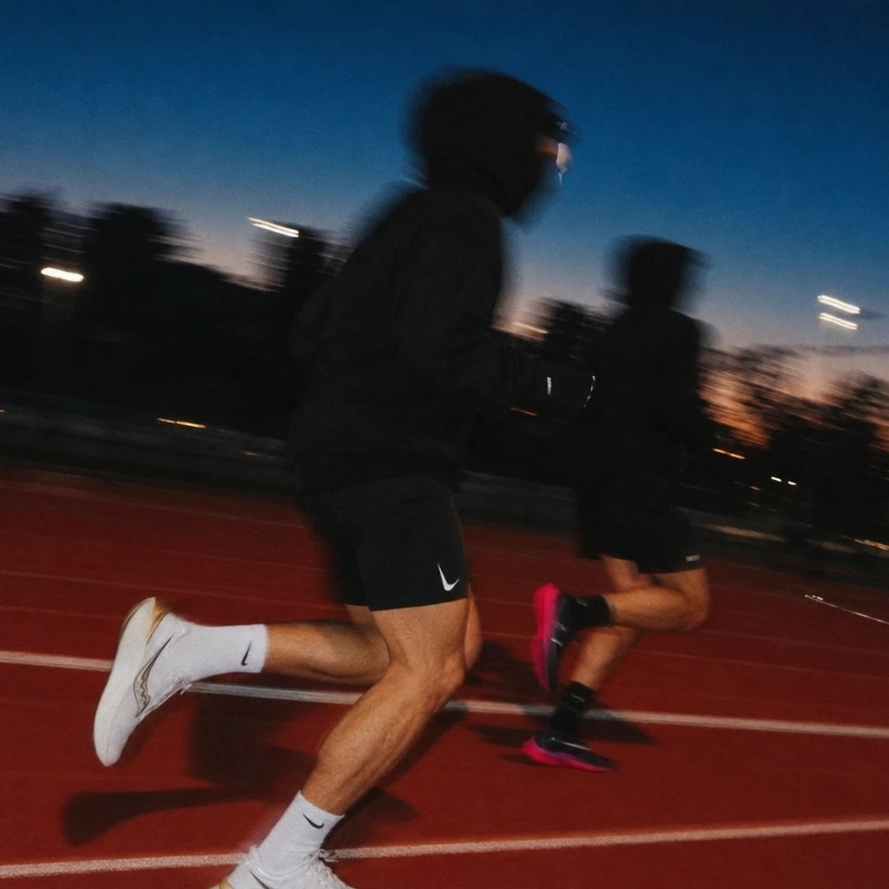

Το πλάνο σου.
Ο ρυθμός σου.
Φτιαγμένο γύρω από τον στόχο, το επίπεδό σου και τις μέρες που μπορείς να τρέξεις.
Hello, Adrien
Thursday 19 November · Week 3 of 8
2-week streak
M
16
T
17
W
18
T
19
F
20
S
21
S
22

Intervals
6 × 800 m
7 km
Distance
42 min
Duration
4:35/km
Target pace
View session
Awa, your coach
Start a touch under control, then settle on 4:35/km. The last efforts should look like the first.
Today
Plan
Coach
Progress
Σερί 2 εβδομάδων
Συνέχισε έτσι
Awa, η προπονήτριά σου
Κράτα 4:35/χλμ.